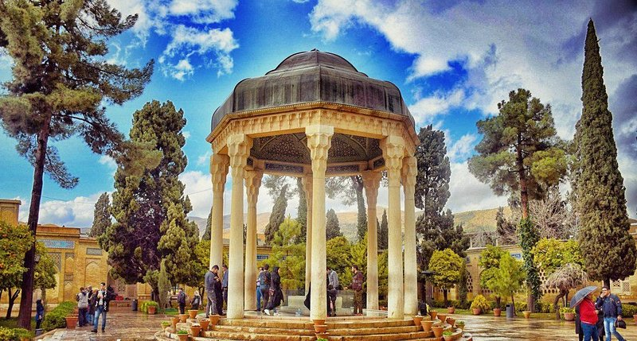

Tombeau de Hafez à Chiraz
Listen to 'Hafiz' in English
|
Transl. Christian Souchon 01.01.2004 - 2026 (c) (r) All rights reserved |
|
- Soufisme: école mystique affirmant que l'homme suffisamment purifié par la méditation, l'extase et l'observance stricte de la loi Coranique peut s'élever à la divinité et s'identifier à Dieu. - Chemseddin HAFIZ de Shiraz (1300-1388): Poète lyrique persan dont les poèmes sur le vin et l'amour (ghazals) ont été interprétées comme des allégories Soufistes. Ils sont réunis dans un recueil unique appelé le "Divan". Dans ce poème datant au plus tard de 1978, Michel transcende une anecdote banale -il est arrivé trop tard pour visiter un monument à Shiraz en Iran- en expérience mystique! • Shiraz possède le mausolée d'un autre mystique: celui du poète Saadi (1184-1280), auteur du "Golestan" ou "Jardin des Roses" (cf. str. 1). • Le poème propose sans doute un très bref résumé de la pensée d'Hafiz, - quand il évoque les symboles soufis de la rose, de la coupe et du manteau, qu'il parle de flamme et de métamorphose, - quand il fait correspondre deux mondes: intérieur, l'esprit, et extérieur, les saisons; - ou encore lorsqu'il oppose les "règles" (procédures d'accès auxquelles obéit l'avion qui reconduira Michel dans son pays) et les "raisons", les règles mystiques de la discipline soufie.(str. 1 et 2). • Un haut-parleur (la trompe?) annonce la fermeture imminente des monuments (str.3). -Michel, touriste distrait, ne réagit pas tout-de-suite, l'esprit occupé par un paradoxe à la fois esthétique et philosophique, empreint d'amertume : « les fictions poétiques sont plus vraies que la mort » (str. 4 et 5). - Ce n'est qu'à la strophe 6 qu'il réalise qu'il a oublié les consignes données par le guide pour pouvoir forcer l'accès du tombeau -ou, pour parler en termes soufis, « le mot et l'anneau », la clé de l'accès mystique et le sceau de l'initiation ! (str. 6). • Mais le jardin constitue le véritable mausolée. Michel se console, considérant que sa connaissance intime qu'il a de la pensée de cet auteur et la relecture de son livre dans un jardin où plane son souvenir valent bien toutes les visites de monuments du monde! (str. 7) (D'autant que les mausolées de Shiraz ont été rénovés au XXe siècle et déplacés au cœur de jardins ad hoc). |
- Sufism: a mystic school asserting that man, sufficiently purified by meditation, ecstasy and strict observance of the Coranic rule may raise himself to divinity and identify with God. - Shemseddin HAFIZ of Shiraz:(1300-1388) Persian lyrical poet whose poems on wine and love (ghazals) were interpreted as Sufist allegories. They were brought together in a unique collection called "Divan". In this poem dating from 1978 at the latest, Michel transcends a trivial anecdote (he was too late to visit a monument at Shiraz in Iran) into a mystical experience! • Shiraz has another mausoleum: poet Saadi's (1184-1280), author of "Golestan" or "the Garden of Roses" (st. 1). • The poem undoubtedly offers a very brief summary of Hafiz' thoughts, - with the Sufi symbols of the rose, the cup, the cloak, the flame and the metamorphosis, - with the Sufi dialectic which parallels an inner world, spirit, with an outer world, seasons; - or else when it opposes “rules” (access procedures to which is subjected the plane that will take home Michel) versus “reasons”, i.e. mystical rules of Sufi discipline (st. 1 and 2). • A loudspeaker ("horn"?) warns that closing time approaches (st.3). - Absent-minded Michel does not react immediately, his mind being busy with an aesthetic-philosophical, bitter paradox: “poetic fictions are truer than death” (str. 4 and 5). - Only in stanza 6 does he realize that he has forgotten all about the tips the courier gave to force access to the tomb, or, to put it in Sufi terms, “the word and the ring”, the key to mystical access and the seal of initiation! (str. 6). • But the garden is the true mausoleum: He consoles himself, considering that his thorough knowledge of this author and the rereading of his book in a garden haunted by his memory are worth all the visits to monuments in the world (str. 7). (Especially since the mausoleums of Shiraz were renovated in the 20th century and moved to the heart of ad hoc gardens). |

Listen to 'Hafiz' in English